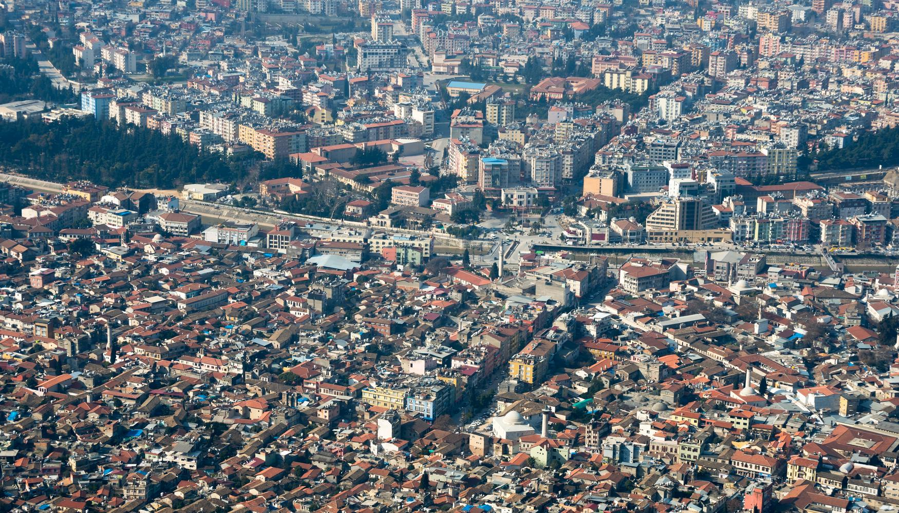

Çift vatandaş olduğum için iki memleketim var:
Suriye(HALEP)

●Halep'e gelince çok değerli bir memleket benim için . Ben Halep te doğdum, 20 sene orada yaşadım güzel bir memleket daha görmedim,
Tarihi MÖ 3000'li yıllara uzanan Halep Kalesi'nde çeşitli Mezopotamya devletleri, Roma İmparatorluğu, Bizans İmparatorluğu, Arap hakimiyeti, Emeviler, Abbasiler, Hamdaniler, Mirdasiler, Ukayliler çok kısa bir süreliğine Büyük Selçuklu Devleti ve Osmanlı İmparatorluğu devirleri yaşanmıştır. I. Dünya Savaşı sonucunda Osmanlı İmparatorluğu'nun ortadan kalkmasından sonra bir müddet Fransızlarda kaldıktan sonra, Suriye Devleti kurulmuştur. Suriye'nin sürekli ticaret ve üretim merkezlerinden biri olmuştur.
Osmanlı İmparatorluğu'nda Bursa ve İstanbul'dan sonraki en önemli dokumacılık merkezi Halep olmuştur. İpekli dokumaları ve meşhur sabunları Halep'in en önemli ihraç malı olmuştur. İstanbul'dan sonra ikinci en büyük ticaret merkezi ve altın çarşıları Halep'te olmuştur. 1500'lü yıllardan itibaren Venedikliler, İngilizler, Fransızlar ve Hollandalılar Halep'te konsolosluklar ve acenteler kurmuştur. Osmanlı'da ilk mason locası da Halep'te kurulmuştur. Osmanlı arşivlerinde yer alan hicri 1304 tarihli bir vesikada, Halep'te İngiliz konsolosu Handerson'un riyasetinde Mason Locası namıyla bir gizli teşkilat kurulduğu bildirilmektedir. Arap harfleriyle ilk matbaa İstanbul'dan önce Halep'e uğramıştır.
Osmanlı şehirciliğinin klasik bir örneği olan Halep'in özelliklerinden biri de Kayşani ismindeki taş cinsinin yapılarda kullanılmasıdır. Halep Kalesi, hanlar, hamamlar, çarşılar, camiler (Halep Ulu Camii dahil), medreseler bu taşlardan yapılmıştır. Halepliler günümüzde bile evlerini taş kaplama yapmaya devam etmektedir. Selçuklu, Eyyubi, Memlük ve Osmanlı izlerini taşıyan Halep; Bursa, Konya, İstanbul'un bir alaşımı gibidir.
Halep, "2006 İslam Kültür Başkenti" unvanını kazandı
Halep Kalesi
kapali carsi
halep yemeği

halep-dolmasi

Vişne Kebabı / Lahm-ı Kiraz

Halep Usulu İçli Köfte
Turkiye(HATAY)

Hatay Türkiye'nin en önemli eski yerleşim yerlerinden biridir. Yapılan arkeolojik araştırmalarda milattan önce 100.000 ile 40.000 yılları arasına tarihlenen bulgulara ulaşılmıştır. İl toprakları ilk Tunç Çağından itibaren Akat Beyliği ve M.Ö. 1800-1600 yılları arasında Yamhad Krallığına bağlı bir beyliğin sınırları içerisinde yer almıştır. Daha sonra MÖ 17. yüzyıl sonlarında Hititlerin ve MÖ 1490 yıllarında Mısır'ın egemenliğine girmiştir. Ardından Urartular, Asurlular ve Persler'in egemenliğine girdi.
MÖ 300 yılında Antakya kurulmuş ve kent hızla gelişmiştir. Kent MÖ 64 yılında Roma İmparatorluğu'na katılmış ve İmparatorluğun Suriye eyaletinin başkenti olmuştur. İslam ordusu tarafından fethedilmiş, Emevi ve Abbasi egemenliğinde kalmıştır. Daha sonra 877'de Tolunoğulları'nın fethettiği topraklar sırayla; Ihşitler ve Selçuklular tarafından yıkılan Halep merkezli Hamdanoğulları (Beni Hamdan/Hamdânîler) egemenliğine girdi. 969 yılında Bizans İmparatorluğunun topraklarına katılan İl, 11-12.yüzyıllarda Haçlı Seferleri sırasında da önemli rol oynamıştır. Antakya Memlûk Devleti tarafından Haçlıların elinden alınmıştır. (18 Mayıs 1268)
Osmanlı İmparatorluğu dönemi
1516'da Yavuz Sultan Selim bu toprakları fethetmiş ve Osmanlı İmparatorluğu dönemi başlamıştır. Memlûk Devletinden zapt edilen Antakya, Osmanlı İmparatorluğu'nda önce Halep'e bağlı bir sancak ve daha sonra kaza olarak yönetilmiştir. Bu dönemde Antakya, Asi Nehri ile Habib Neccar Dağı arasındaki dar ve meyilli alanda, 1,5–2 km²'lik bir alan üzerine yerleşmiş orta büyüklükte bir şehirdi. Osmanlı İmparatorluğu'nun Hatay'daki hakimiyeti 1918 yılına kadar devam etti.
Hatay Devleti
3 Temmuz 1938'de Türk ve Fransız heyetleri arasında yapılan antlaşma ile Hatay'da eşit sayıda olacak şekilde toplam 5000 kişilik Türk ve Fransız askeri gücü konuşlandırıldı. Bu şekilde Hatay'ın statüsü korunmuş oldu. Türk Ordusu 4 Temmuz 1938'de Hatay'a girerek görevine başladı. Seçimler ile oluşturulan Hatay Meclisi 2 Eylül 1938'de toplanarak bağımsız Hatay Cumhuriyeti'ni ilan etti. Cumhurbaşkanlığına Tayfur Sökmen, Başbakanlığa ise Abdurrahman Melek seçildi.
Cumhuriyet dönemi
Ankara’da, Fransa ile Türkiye arasında, 23 Haziran 1939 tarihinde “Türkiye ile Suriye Arasında Toprak Sorunlarının Kesinlikle Çözümüne İlişkin Antlaşma”nın imzalanması ile Fransa, Hatay’ın Türkiye’ye katılmasını kabul etmesiyle, Hatay Devlet Meclisi, 29 Haziran 1939 tarihinde oy birliği ile Türkiye Cumhuriyeti'ne iltihak kararı aldı.[5] Türkiye ise, 7 Temmuz 1939 günü çıkarılan bir yasa ile "Hatay" ilini kurarak bağlanma işlemini sonuçlandırdı. 23 Temmuz 1939'da Fransız Birlikleri Hatay'ı terk ettiler.
2012 yılında çıkarılan 6360 sayılı kanun ile Hatay'da sınırları il mülki sınırları olan Büyükşehir Belediyesi kuruldu ve 2014 Türkiye yerel seçimlerinin ardından Büyükşehir Belediyesi çalışmalarına başladı.